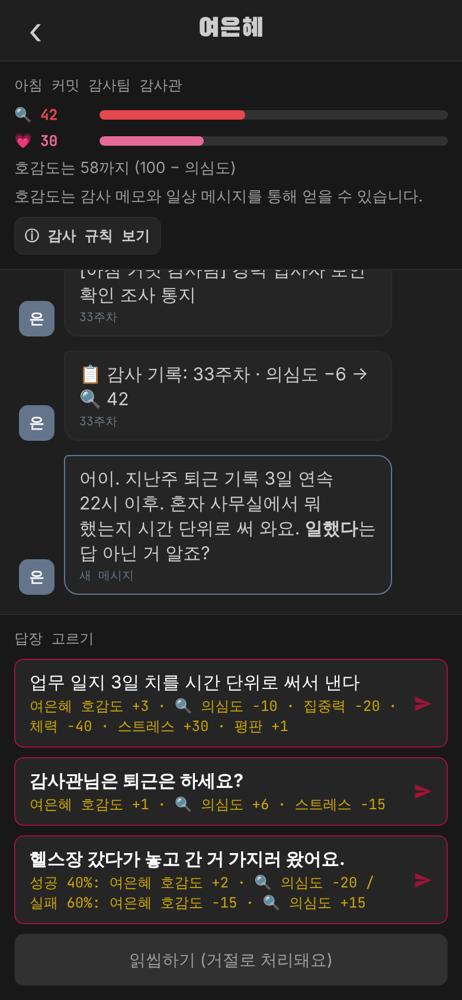
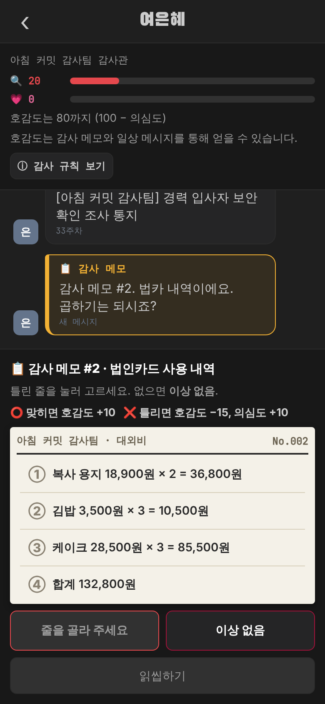

여은혜 공략
경쟁 대기업 아침 커밋의 감사관 은혜. 의심도·감사 메모·혐의 11가지·징계 해고까지, 피감사인에서 남편이 되는 법
아침 커밋 감사팀 감사관. 입사 첫날 나를 「기밀 유출 조사 대상」으로 부르는, 업계에서 제일 깐깐한 사람이에요.
- 아침 커밋(경쟁 대기업)에 경력직으로 들어가면 감사가 시작돼요. 의심도 80, 호감도 0에서 출발.
- 게이지 2개: 🔍 의심도와 💗 호감도. 호감도는 100 − 의심도를 못 넘고, 썸·고백·청혼은 의심도 0일 때만 와요.
- 호감도는 3주마다 오는 감사 메모(틀린 줄 찾기 퀴즈)와 매일 감사 메시지로만 올라요. 아침 커밋에서 의심도 100이면 그 자리에서 징계 해고(회차 끝) 🪤
- 잘하면 의외로 빨라요: 시뮬레이션(21주 입사, 메모 전부 정답) 의심도 0 28주 → 썸 37주 → 연애 42주 → 결혼 62주.
은혜 루트는 연애 시뮬레이션이라기보다 감사 생존 게임이에요 😅 주식을 사고팔면 「주식 중독」, 한정판을 미리 사면 「출시 정보 유출」, 야근 3칸이면 「야간 단독 근무」… 은혜는 다 보고 있어요. 대신 깨끗하게 살면서 메모를 꼼꼼히 풀면, 「어이. 너 나 좋아하지?」 소리를 듣게 돼요.
만나는 조건#
| 항목 | 조건 |
|---|---|
| 회사 | 아침 커밋 재직 중 (칭호 필요 없음) |
| 아침 커밋 가는 법 | 헤드헌터 「대기업 경력직 자리예요. 아침 커밋.」: 20주차~, 지금 스타트업·프리랜서·외국계에 있고 아침 커밋 경력 없음. 즉 첫 회사에서 한 번 옮긴 뒤에만 와요 |
| 첫 메시지 | 아침 커밋 첫 주 마감에 3통: 「[아침 커밋 감사팀] 경력 입사자 보안 확인 조사 통지」 → 7층 감사실 → 「오늘부로 그쪽은 「상시 감사 대상」이에요」 |
| 시작 | 의심도 80, 호감도 0 (회차 보너스 「연애 세포」 적용 안 됨) |
| 첫 만남 답 | 효과 |
|---|---|
| 통지: 「알겠습니다. 시간 맞춰 가겠습니다.」 | 의심도 -3 |
| 통지: 「전 직장 노트북은 반납했어요. 반납 확인서도 있어요.」 ⭐ | 의심도 -5, 스트레스 +5 |
| 통지: 「제가 왜요? 아무것도 안 가져왔는데요.」 | 의심도 +5 |
| 감사실: 「물어보실 거 다 물어보세요. 숨길 거 없어요.」 ⭐ | 의심도 -5, 체력 -10, 스트레스 +10 |
| 감사실: 「감사관님 엄청 깐깐하시다고 소문났던데요.」 | 의심도 +3 |
| 통지·감사실 읽씹 | 의심도 +10 |
고유 시스템: 감사 메모와 의심도#
- 게이지
- 🔍 의심도 0~100 / 💗 호감도는 100 − 의심도가 상한
- 감사 메모
- 3주마다 1장. 호감도의 주 수입원
- 매일 감사 메시지
- 매주 1통. 의심도에 따라 강(60+) · 중(30~59) · 약(29 이하)
- 주 마감
- 그 주 가장 큰 혐의 1개만 + 깨끗한 생활 감점
- 관계 단계
- 썸 초대 · 고백 · 청혼은 의심도 0일 때만
- 연애·결혼 중
- 주 마감 의심도 11 이상이면 「못 믿겠어」로 끝(결혼이면 이혼)

📝 감사 메모 (틀린 줄 찾기)#

- 종류 6가지: 면담 일정표(날짜·요일), 회의실 일정(시각·걸린 시간), 법인카드 사용 내역(단가 × 수량, 합계, 부가세 10%), 주간 근무 기록(점심 1시간 빼고), 재고 대장(입고·출고), 출장비 정산(기간·박수·일비·숙박비).
- 난이도: 쉬움 3줄 · 보통 4줄 · 어려움 5줄. 종류·난이도는 무작위.
- 틀린 줄은 정확히 1줄이거나, 약 20%는 「이상 없음」이에요.
- 각 줄은 바로 윗줄에 적힌 값을 기준으로만 맞는지 봐요(윗줄이 틀렸어도 다음 줄은 그 틀린 값을 이어받아 계산해요). 그래서 틀린 줄이 2개처럼 보이는 일은 없어요.
- 면담 일정표·회의실 일정·재고 대장의 첫 줄은 출발점이라 절대 틀린 줄이 아니에요.
| 난이도 | 정답 | 오답 호감도 | 오답 의심도 |
|---|---|---|---|
| 쉬움 (3줄) | +7 | -20 | +15 |
| 보통 (4줄) | +10 | -15 | +10 |
| 어려움 (5줄) | +13 | -10 | +5 |
| 읽씹 | — | -20 | +20 |
오답 벌점은 쉬울수록 커요(쉬움 -20 · 의심도 +15). 3줄짜리라고 대충 보지 말고 계산기를 두드리세요 🧮 답하면 결과 앞에 ⭕/❌가 바로 떠요.
📨 매일 감사 메시지 (매주 1통)#
| 의심도 | ① 협조 | ② 반발 | ③ 둘러대기 (확률) |
|---|---|---|---|
| 강 (60+) | 의심도 -10, 호감도 +3 / 스트레스 +30, 체력 -40, 집중력 -20, 평판 +1 | +6, +1 / 스트레스 -15 | 40%: -20, +2 / 실패 +15, -15 |
| 중 (30~59) | -7, +3 / 스트레스 +20, 체력 -30 | +4, +1 / 스트레스 -10 | 50%: -12, +2 / 실패 +10, -10 |
| 약 (29 이하) | -3, +3 / 스트레스 +5, 체력 -10, 집중력 -10 | +2, +1 / 스트레스 -5 | 60%: -6, +2 / 실패 +6, -5 |
(앞 숫자 = 의심도, 뒤 = 호감도.) 기댓값으로 보면 둘러대기는 강 단계에서 오히려 손해(평균 의심도 +1)고, 중·약에서도 협조(-7 / -3)보다 못해요. 정답은 늘 ① 협조, 대신 체력·스트레스가 크게 드니 그 주는 휴식을 챙기세요. 읽씹은 의심도 +10이고 다음 주에 「[재발송]」이 와요.
⚖️ 주 마감 혐의 11가지 (가장 큰 것 1개만 적용)#
| 혐의 | 걸리는 조건 | 의심도 |
|---|---|---|
| 주식 중독 | 주식 매매가 2주 연속 | +5 |
| 불시 감사 | 로테이션 감사 주(4~6주마다)에 실물자산을 갖고 있거나 그사이 산 적 있음 | +5 |
| 내부자 거래 | 갖고 있는 주식이 한 주에 +30% 이상 (50% 확률) | +4 |
| 출시 정보 유출 | 한정판 사전 구매 | +4 |
| 탈세 의심 | 되팔기 차익 | +3 |
| 급전, 횡령 의심 | 전당포 이용 | +3 |
| 개발 정보 이용 | 부동산 2채 이상 보유 | +3 |
| 사재기 | 로테이션 감사 주에 같은 실물자산 4개 이상 | +2 × 개수 |
| 야간 단독 근무 | 일정에 야근 3칸 이상 | +2 |
| 겸업 | 일정에 사이드 프로젝트 | +2 |
| 업무 시간 외부 연락 | 그 주 다른 히로인 채팅 메시지 10개 이상 | +2 |
| 깨끗한 생활 (모두 더해요) | 의심도 |
|---|---|
| 그 주 투자 매매 0회 | -2 |
| 그 주 티켓 S · A등급 | -3 |
| 정시 퇴근 (야근 0칸) | -1 |
| 아침 커밋 팀장 호감도 70 이상 | -2 |
혐의에 걸리면 다음 주에 감사 통지(「확인」만)가 와요. 의심도 50 이하로 내려가면 「피조사자 → 참고인」, 0이 되면 「무혐의」 안내가 한 번씩 와요(무혐의가 온 주엔 관계 단계가 쉬어요). 참고인 안내에선 「끝까지 깨끗하게 증명할게요.」가 의심도 -3이고, 「이제 좀 편하게 지내도 되죠?」는 +3, 읽씹은 +5예요 😉
매매 0 + 티켓 S·A + 정시 퇴근 + 팀장 호감도 70이면 혐의 없는 주에 -8, 거기에 매일 메시지 협조(-10/-7/-3)까지 하면 80에서 시작해도 몇 주 만에 0이에요. 시뮬레이션은 입사 21주 → 의심도 0 28주(중앙값)였어요. 은혜 루트 동안 투자·사이드·야근은 잠깐 쉬세요.
호감도 올리는 법#
| 출처 | 빈도 | 호감도 |
|---|---|---|
| 감사 메모 정답 | 3주마다 | +7 / +10 / +13 |
| 매일 감사 메시지 ① 협조 | 매주 | +3 |
| 데이트 · 장비(향수·픽업 노트) · 연애 세포 | — | 없음 |
연애 중 공용 대사(「어이. 오늘 저녁 감사 일정 비었어」 등 18개)는 호감도를 올리지 않고, 나쁜 답에 호감도 -8~-15 · 의심도 +2~+4가 붙어요. 그런데 착해 보이는 답 중에도 의심도가 붙는 게 있어요: 파인다이닝 예약 · 바다 여행 「간다」 · 결혼기념일 「여행을 예약한다」 · 「직접 만든 기념일 앱을 선물한다」(+2), 「당연히 기억하지!」 · 「비밀로 하자」(+3), 「회사 커피야」(+4). 연애 중엔 의심도 11이 한계선이니 의심도 표시가 없는 답(동네 떡볶이, 손편지, 반지 공방 등)을 고르세요. 그리고 의심도가 남아 있으면 호감도가 그만큼 막혀요(의심도 30이면 호감도 최대 70).
메모 실력별 시뮬레이션#
실제 게임 엔진으로 21주에 아침 커밋에 들어가, 매일 메시지 ① 협조 · 투자 0 · 야근 0 · 데이트 3칸으로 100주까지 돌렸어요(중앙값).
| 설정 | 의심도 0 | 썸 | 연애 | 결혼 | 엔딩 |
|---|---|---|---|---|---|
| 메모 전부 정답, 티켓 S (40판) | 28주 | 37주 | 42주 | 62주 | 결혼 100% · 클린 100% |
| 메모 전부 정답, 티켓 B (20판) | 30주 | 36주 | 41주 | 61주 | 결혼 100% · 클린 100% |
| 메모 정답률 80% (40판) | 28주 | 39주 | 47주 | 67주 | 결혼 100% · 클린 80% |
| 메모 정답률 60% (40판) | 29주 | 47주 | 59주 | 78주(85%) | 결혼 85% · 클린 45% · 연애 엔딩 15% |
메모를 자주 틀리면 호감도가 안 차서 결혼이 80주를 넘기기 쉽고, 그러면 「클린 감사 보고서」(81주부터 매주 결혼 + 의심도 0)가 날아가요. 이 조건의 시뮬레이션에서는 징계 해고·「못 믿겠어」 이별이 한 판도 없었어요.
썸 → 고백 → 연애#
- 썸 초대 (의심도 0 + 호감도 80, 아무와도 안 사귈 때)「이번 주 토요일, 현장 감사가 하나 있어요. 동행 1명이 필요하고요.」 → 「갈게요. 현장 감사, 처음이라 기대되네요.」 「주말엔 좀 쉬고 싶어서요」나 읽씹은 끝.
- 썸부터 말투가 반말「어이」로 바뀌어요. 매일 메시지도 반말 버전.
- 고백 (의심도 0 + 100)「어이. 너 나 좋아하지? 메모 오는 날마다 표정이 달라.」 → 「응. 사귀자. 기록 남겨 둬.」 또는 「감사관님은 나 안 좋아해?」(스트레스 +5). 「좋은 동료로 남고 싶어.」는 끝.
결혼 조건#
연애 중 의심도 0 + 호감도 100 + 데이트 진도 60 → 「감사 결과 나왔어. 「승인」. 서류는 내가 다 준비했어. 서명만 해.」 → 「서명할게. 평생 감사받을게.」. 「아직은 준비가 안 됐어.」나 읽씹은 다시 안 와요. 데이트로 호감도는 안 오르지만, 진도는 데이트로만 쌓이고 데이트 0번인 주는 -30이에요.
사귀는 동안 주 마감 의심도가 11 이상이면 다음 주 「…나 도저히 너를 못 믿겠어. 다시 피감사인 관계 시작이야.」로 끝나요(결혼 중이면 이혼). 쉬운 메모 오답(+15)은 그 주 깨끗한 생활(-6~-8)로 겨우 10 아래에 남지만, 거기에 혐의 하나(+2~+5)나 매일 메시지 반발(+2~+6)이 겹치면 바로 넘어요. 연애 시작 뒤엔 주식 매매·한정판·야근 3칸을 완전히 끊고, 메모를 틀린 주엔 특히 조심하세요. (시뮬레이션: 메모 정답률 80%여도 40판 모두 결혼까지 갔어요. 깨끗한 생활이 받쳐 줬거든요.)
동거 · 신혼 · 육아#
셋 다 없어요. 은혜 루트엔 동거·신혼·아기 제안이 오지 않아요. 결혼 후엔 집안일(0번인 주 -30)과 의심도 0 유지가 전부예요.
엔딩 전부#
- 조건
- 100주차에 은혜와 사귀는 중(미혼)
- 보상
- 레어 카드팩 1
- 조건
- 의심도 0 + 진도 60 + 호감도 100 → 청혼 수락 → 100주차에 결혼 중
- 보상
- 전설 카드팩 1
- 조건
- 81~100주차의 모든 주 마감에 은혜와 결혼 중 + 의심도 0 (그러니 80주차까지 결혼해야 해요)
- 보상
- 레어 카드팩 1
- 조건
- 아침 커밋에 다니는 동안 의심도 100 → 그 주 마감에 즉시 회차 종료. 또는 썸 이상으로 아침 커밋을 떠난 뒤 의심도 100 → 엔딩만 기록되고 회차는 계속
- 보상
- 레어 카드팩 1 (회차가 100주 전에 끝나면 CP · 코인은 0)
결혼 + 클린이면 「클린 감사 보고서」와 「평생 감사 대상」이 함께 기록돼요. 「평생 감사 대상」은 이 섹션 6명 중 유일하게 전설 카드팩 보상이에요 ✨
실패 · 이별 조건#
| 상황 | 결과 | 피하는 법 |
|---|---|---|
| 아침 커밋에서 의심도 100 (그 주 한 번이라도 찍으면) | 징계 해고, 회차 즉시 종료 | 입사 초 80에서 메모 오답·읽씹 금지 |
| 연애·결혼 중 주 마감 의심도 11+ | 「못 믿겠어」 → 끝 / 이혼 | 혐의 0 생활 |
| 썸 미만에서 아침 커밋을 떠남 | 은혜 영영 사라짐(채팅 삭제) | 썸 전에는 이직 금지 |
| 썸 이상에서 아침 커밋을 떠남 | 「안 끝나. 오히려 이제부턴 사적인 감사야」 — 감사 계속, 100이면 작별 + 징계 해고 기록 | 떠나도 메모 계속 풀기 |
| 썸 초대 · 고백 거절 / 호감도 0 | 「끝남」: 정식 감사관으로 남아 통지·매일 메시지는 계속, 메모는 멈춤 | 수락 |
| 청혼 거절 · 읽씹 | 청혼 다시 안 옴 | 수락 |
스포일러: 징계 해고 엔딩의 결말 2가지
썸 이상일 때 해고되면 서류에 은혜의 도장이 찍혀 있고 「…기록은 내가 했어. 다른 사람이 하는 것보다 나으니까.」 하고 도장이 조금 번져 있어요. 회사를 떠난 뒤라면 마지막 메시지는 「피감사인 기록 종결합니다. 다시는 연락하지 마세요.」예요.
추천 공략 루트#
- 1~19주첫 회사에서 스타트업(12주~, 코딩력 90) 또는 외국계(16주~, 영어 + 코딩력 90)로 한 번 옮기기.
- 20주~아침 커밋 헤드헌터 「제안을 받아 본다」 → 메신저 탭 맨 위 제안 수락.
- 입사 첫 주「반납 확인서도 있어요」 + 「물어보실 거 다 물어보세요」 (의심도 -10).
- 매주매일 메시지 ① 협조, 투자 매매 0, 야근 0, 사이드 0, 티켓 S·A. 팀장 호감도 70 이상 만들기.
- 3주마다감사 메모를 천천히 검산. 읽씹 절대 금지.
- 의심도 0 + 호감도 80썸 초대 수락(다른 히로인과 사귀면 안 와요). 데이트 3칸 이상.
- 80주차 전 결혼81주부터 매주 의심도 0으로 클린 감사 보고서까지.
자주 묻는 질문#
- 주식이나 부동산은 아예 하면 안 돼요?
- 혐의는 주 마감에 가장 큰 것 1개만 붙어서, 가끔은 메꿀 수 있어요. 하지만 연애 중엔 의심도 11이 한계라, 썸 이후엔 매매를 멈추고 부동산은 1채, 실물자산은 안 갖는 게 안전해요.
- 메모를 틀려도 회복돼요?
- 네. 오답은 의심도와 호감도가 깎일 뿐이고, 협조 답과 깨끗한 주로 다시 내릴 수 있어요. 단, 아침 커밋 입사 직후(의심도 80)엔 오답 + 읽씹이 겹치면 100에 닿을 수 있어요.
- 은혜도 어장 확률에 들어가요?
- 어장 확률엔 들어가지만, 카사노바·문어발·단체방 폭로 인원엔 안 들어가요.
- 향수를 사면 빨라져요?
- 아니요. 은혜는 장비·연애 세포 보너스가 전부 빠져요. 메모 숫자 그대로예요.